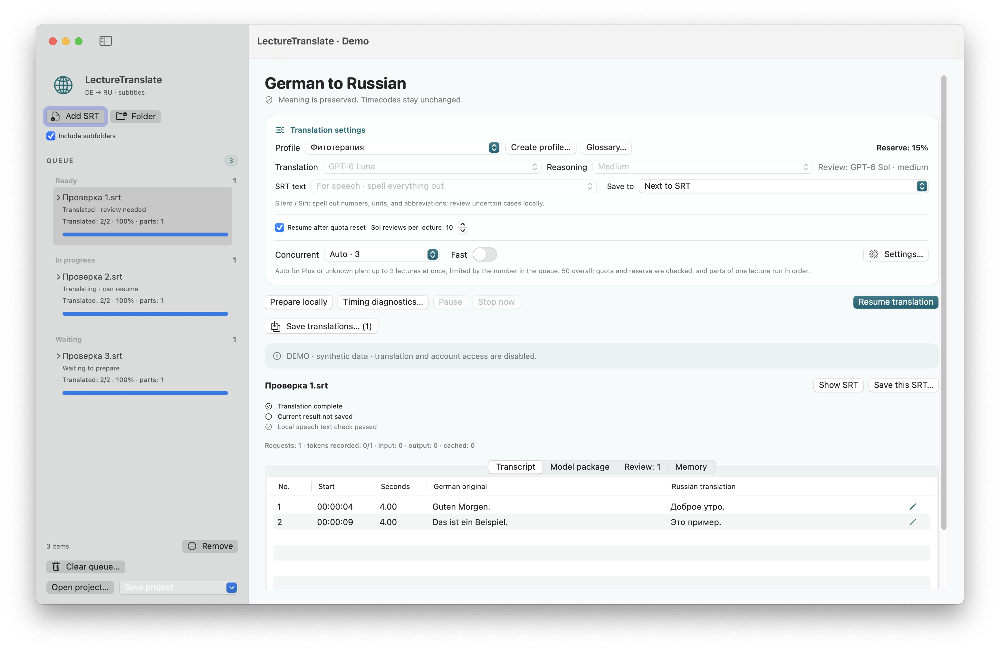

macOS 15+ · Apple Silicon
LectureTranslate
Translate German SRT subtitles into Russian with preserved timecodes, a queue and draft review.
Release · 3.5.1Before you startRequires a separate connection and sign-in to an external translation service. FFmpeg/ffprobe are optional for specific media features.


How it works
- Open SRT
- Connect a translation service
- Save translated SRT
Illustrative SRT example · not a live result
1
00:00:01,000 --> 00:00:04,000
Guten Morgen. Heute besprechen wir Netzwerke.1
00:00:01,000 --> 00:00:04,000
Good morning. Today we discuss networks.First steps
Extract the app archive, configure the connection using the guide and add German .srt files. Review translations before use.